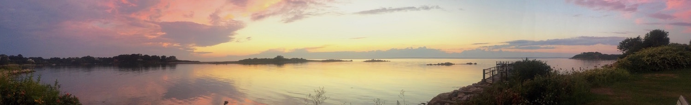
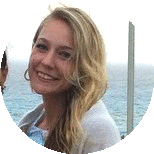
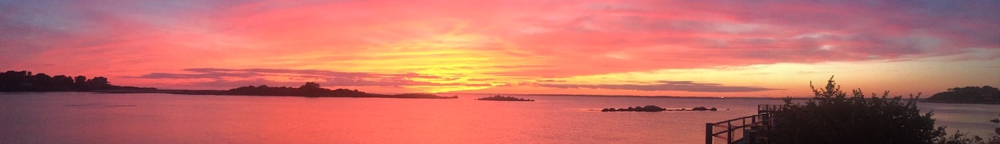
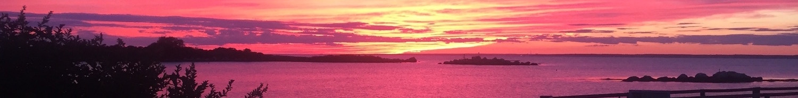

Virginia Cook


Hi there! My name is Virginia Cook, and I am a developer and project manager at the DALI lab this term. I have lived in New York City all my life, and my favorite place in the world is Fishers Island, New York, where my grandparents met, and where some of the most beautiful sunsets reveal themselves in the sky!
I have been excited about programming and computer science since middle school, and have grown in those interests since. I have particularly enjoyed mobile programming, and am proficient in Android, Swift and Objective C. I am so excited to work at DALI and develop a project that has the potential to change lives.
My random fun fact is that I sang in the New York City Opera Children's Chorus for 8 years, and performed at a theater with 2800 sometimes sold out seats. Since then it's been a lot easier for me to speak and present in front of crowds!
